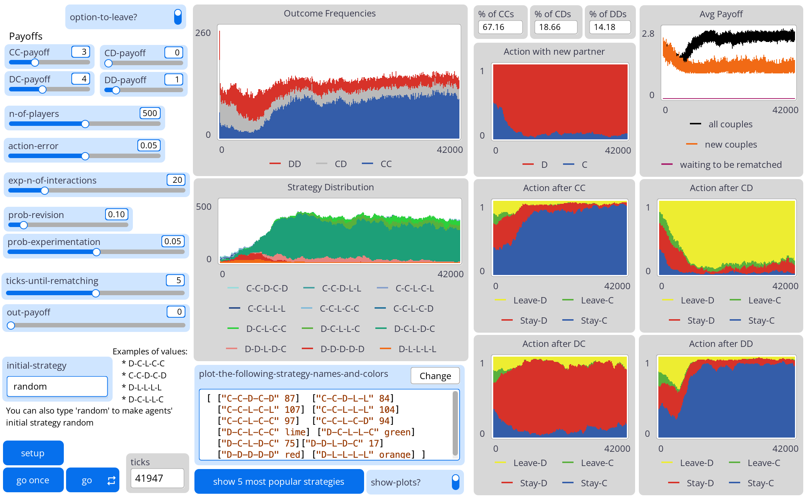

ES-1-outcome (Endogenous Separation conditioned on the previous outcome)
Luis R. Izquierdo, Segismundo S. Izquierdo & Robert Boyd
HOW TO INSTALL THE MODEL
To use ES-1-outcome, you will have to install
NetLogo 6.4 (free and open source) and
download
the model itself. Unzip the downloaded file and click on ES-1-outcome.nlogo
OVERVIEW OF THE MODEL
ES-1-outcome (Endogenous Separation conditioned on the previous outcome) is a model
designed to formally analyze the mechanism of endogenous separation (or conditional dissociation) in the
evolutionary emergence of cooperation. This section gives an informal and brief overview of
ES-1-outcome. The figure below provides a sketch that illustrates the sequence of events within each
time-step.

Sketch of the sequence of events within each time-step. The "Remaining Pairs" and "Singles" at the end of a
time-step are identical to the "Existing Pairs" and "Singles" in the next time-step.
We use bold red italicised Arial font to denote parameters (i.e. variables that can be
set by the user). In ES-1-outcome, there is a population of
n-of-players players that are matched in couples (partnerships) to play a 2×2
symmetric game. The 2 possible actions players can take in the game are denoted C (for Cooperate)
and D (for Defect).
After having played the game, partnerships may dissolve in two ways:
-
Exogenously - a partnership is exogenously broken with probability (1-1/exp-n-of-interactions). Players who undergo exogenous separation revise their strategy with probability
prob-revision.
-
Endogenously - after observing the outcome of the game, either player may unilaterally choose to leave the
partnership, according to their individual strategy.
Players who separate are randomly re-matched in the following period and continue playing the stage game with
their new partner.
The model can be used to simulate processes with endogenous separation (if
option-to-leave? = on) and processes without endogenous
separation (if option-to-leave? = off).
DESCRIPTION OF THE MODEL
This section explains the formal model that ES-1-outcome implements. The information provided here
should suffice to re-implement the same formal model in any sophisticated enough modelling platform.
The game
Consider a population of n-of-players individuals; some of the individuals are matched
in pairs and some may be single.
Every individual who is single at the beginning of the time-step is randomly matched with another single. Thus,
after this random matching of singles, every individual is paired with another individual.
In each time-step, the two members of every pair play a symmetric 2×2 game once, where each of them can
undertake one of two possible actions. These two possible actions are called C (for Cooperate)
and D (for Defect). The action selected by each of the players determines the payoff that each of
them receives in that time-step: CC-payoff, CD-payoff,
DC-payoff, or DD-payoff, where AB-payoff denotes the payoff
that an individual choosing action A obtains when her counterpart chooses action B.
Memory-one strategies
Each individual carries five "genes" that shape her behaviour. These five genes determine the individual's
strategy.
-
First action: The first gene determines the individual's first action, i.e. the action (C or D) when the individual interacts with her partner for the very first
time.
-
After CC: The second gene determines what to do when the outcome of the interaction has been
CC, i.e. both players have played C. The options are:
-
C: Stay with the current partner and, assuming the partnership continues, play C in the
following time-step.
-
D: Stay with the current partner and, assuming the partnership continues, play D in the
following time-step.
-
L: Leave the current partnership. In this case, the partnership is broken regardless of
the decision of the partner.
-
After CD: The third gene determines the choice -also C, D or L- after outcome
CD, which denotes the situation where the individual has played C and the partner has played D.
-
After DC: The fourth gene determines the choice (C, D or L) after outcome
DC, which denotes the situation where the individual has played D and the partner has played C.
-
After DD: Finally, the fifth gene determines the choice (C, D or L) after outcome
DD, i.e. when the two players have defected.
A strategy thus specifies a course of action at every possible juncture in an individual's life. The number of
possible memory-one strategies in the model with the option to leave (i.e., if
option-to-leave? = on) is 2·3·3·3·3 =
162. The memory-one strategies for the model without the option to leave (option-to-leave?
= off) are the 2·24 = 32 strategies with no L.
We use these five genes to name the different strategies. An example of a strategy is D-C-L-D-C. A player with
this strategy:
- Starts by playing D whenever the player meets a new partner.
- After CC, the player stays and plays C in the next interaction.
-
After CD, the player leaves (L) the current partnership, so the two members of the partnership will join the
pool of singles.
- After DC, the player stays and plays D in the next interaction.
- After DD, the player stays and plays C in the next interaction.
Thus, Tit-For-Tat corresponds to C-C-D-C-D, Win-Stay-Lose-Shift is C-C-D-D-C, and C-C-D-D-D is a
strategy that chooses to cooperate with new partners and keeps on cooperating if and only if there is mutual
cooperation; otherwise it defects.
Errors
There is also the possibility of errors when playing the game. Every time an individual must decide what action
to take in the game (C or D), she will make an error (i.e. choose the unintended action) with probability
action-error. Thus, the agent will take the action prescribed by her strategy with
probability (1 - action-error) and the other one (C or D), with probability
action-error:
The time line
The population process advances in discrete time-steps t = 1, 2, 3,... which are called 'ticks' in the
interface of the model. In each time-step, the following events occur in sequence (see figure above):
-
Random matching of singles. At the beginning of each time-step, single individuals are randomly matched. Note that all individuals
are single at the beginning of the very first time-step.
-
The stage game. All pairs play the 2×2 symmetric game described above once and obtain the corresponding payoff.
Each individual's action (C or D) is determined by (the corresponding gene in) her strategy,
potentially affected by action-error.
-
Exogenous separation. Every partnership is exogenously broken with probability (1-1/exp-n-of-interactions). Thus, parameter exp-n-of-interactions is the expected number of interactions of
partnerships whose members do not choose to break up. If a partnership is broken, both players join the pool
of singles.
-
Revision of strategies. Players whose partnership has been exogenously broken may revise their strategy, with independent
probability prob-revision. The revision process is as follows:
-
With probability prob-experimentation, the revising player adopts a
neighboring strategy within the set of feasible strategies. Two strategies are neighbors if and
only they differ in exactly one gene. To be precise, revising players change one of the 5 genes that
make up their strategy, chosen uniformly at random. Then,
-
If option-to-leave? = off, the action prescribed
by the randomly chosen gene is flipped (C ↦ D, and D ↦ C).
-
If option-to-leave? = on, and the first gene is
selected, the action prescribed is flipped (C ↦ D, and D ↦ C). If any of the other
four genes is selected, then the action is replaced by any of the other two possibilities (C
↦ {D or L}, D ↦ {C or L}, and L ↦ {C or D}), with 50% probability of choosing
each of them.
-
With probability (1-prob-experimentation), revising players choose one of the
strategies that is being played in the population, with probability proportional to the total payoff
obtained by the players using that strategy during the current stage.
Izquierdo et al. (2024, Appendix A1)
show three different ways one can implement this procedure.
-
Endogenous separation. Every individual involved in a partnership decides whether to leave or stay, according to her strategy.
Individuals involved in partnerships that are broken join the pool of singles entering the next time-step.
HOW TO USE IT

Type of model: with or without the option to leave
The user can choose to simulate a) a process with the option to leave (162 possible strategies), by setting
option-to-leave? = on, or b) a process without that possibility (32
possible strategies), by turning option-to-leave? off.
Payoffs
-
CC-payoff: Payoff obtained by a player who cooperates when the other player cooperates
too.
-
CD-payoff: Payoff obtained by a player who cooperates when the other player defects.
-
DC-payoff: Payoff obtained by a player who defects when the other player cooperates.
-
DD-payoff: Payoff obtained by a player who defects when the other player also defects.
Population parameters
- n-of-players: Number of players in the population
-
action-error: Probability with which an individual makes an error when choosing the
action in the game (C or D).
-
exp-n-of-interactions: The expected number of interactions of partnerships whose
members do not choose to break up. This actually sets the probability of exogenous breakup for each
partnership at every time-step to the value 1/exp-n-of-interactions.
-
prob-revision: Probability with which a player whose partnership has been exogenously
broken revises her strategy.
-
prob-experimentation: Probability with which a revising player adopts a random
neighboring strategy within the set of feasible strategies.
-
initial-strategy: Initial strategy for the population. It can be any of the 162
strategies for the whole population, or random.
-
If initial-strategy = random, each player takes one of the
possible strategies with equal probability. There are 162 possible strategies if
option-to-leave? = on and 32 if
option-to-leave? = off.
-
Otherwise, every player in the population adopts the strategy introduced in this input box. To denote
strategies, we use the notation X1-X2-X3-X4-X5, where:
- X1 ∈ {C, D} is the action to take with a new partner,
-
X2 ∈ {C,D L} is the action to take after outcome
CC,
-
X3 ∈ {C,D L} is the action to take after outcome
CD,
-
X4 ∈ {C,D L} is the action to take after outcome
DC,
-
X5 ∈ {C,D L} is the action to take after outcome
DD,
For instance,
C-C-L-C-L is the strategy that always cooperates, stays (and cooperates) if the
current partner cooperated in the previous interaction, and leaves if the partner defected in the
previous interaction. C-C-D-C-D is the famous 'Tit for Tat'.
Buttons
-
setup: Creates a new population of n-of-players players
according to initial-strategy.
- go once: Pressing this button will run the model one time-step only.
-
go: Pressing this button will run the model until this same button is pressed again.
-
show 5 most popular strategies: When you press this button, a list is shown in the
command center, with the 5 most popular strategies and the number of individuals that are using each of
them.
MONITORS AND PLOTS
Monitors
- ticks: Number of time-steps that have gone by.
-
% of CCs: Percentage of couples where both players cooperated in the current
time-step.
-
% of CDs: Percentage of couples where one player cooperated and the other player
defected in the current time-step.
-
% of DDs: Percentage of couples where both players defected in the current time-step.
Plots
Switch
show-plots? controls whether plots are updated every tick or not. The model runs
significantly faster if show-plots? is off. Importantly, all plots
refer to the situation after the processes of exogenous and endogenous breakup have taken place but before any
player revises her strategy.
LICENCE
ES-1-outcome (Endogenous Separation conditioned on the previous outcome) is a model designed to formally
analyze the mechanism of endogenous separation (or conditional dissociation) in the evolutionary emergence of
cooperation.
Copyright (C) 2025 Luis R. Izquierdo,
Segismundo S. Izquierdo &
Robert Boyd
This program is free software; you can redistribute it and/or modify it under the terms of the
GNU General Public License as published by
the Free Software Foundation; either version 3 of the License, or (at your option) any later version.
This program is distributed in the hope that it will be useful, but WITHOUT ANY WARRANTY; without even the
implied warranty of MERCHANTABILITY or FITNESS FOR A PARTICULAR PURPOSE. See the
GNU General Public License for more details.
You can download a copy of the
GNU General Public License by clicking
here; you can also get a printed copy writing to the Free Software
Foundation, Inc., 51 Franklin Street, Fifth Floor, Boston, MA 02110-1301, USA.
Contact information:
Luis R. Izquierdo
University of Burgos, Spain.
e-mail: lrizquierdo@ubu.es
MODELLERS
This program has been designed and implemented by
Luis R. Izquierdo,
Segismundo S. Izquierdo &
Robert Boyd.